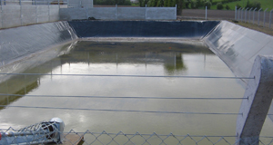

Civil Engineering
Civil engineering concrete structure
Explore the detail, then discuss the requirements of your own project.
Discuss the job
A closer look.
An example of civil engineering. The material, dimensions, layout and finish of your project can be discussed directly with the team.
← Back to all work